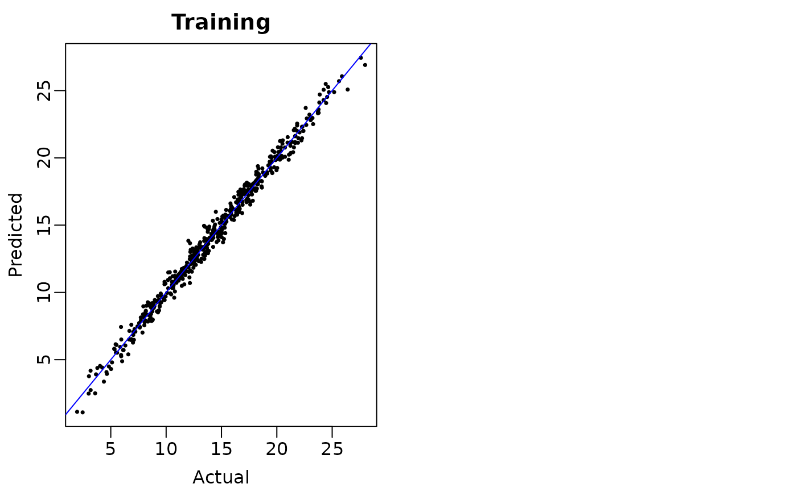

A more flexible BART
flexBART.RdImplements a more flexible version of Bayesian Additive Regression Trees (BART) and Deshpande et al. (2024)'s varying coefficient BART model (VCBART) that, at a high-level, represents regression functions as the sum of several weighted ensembles of binary regression trees.
Through the formula interface, users can carefully control the splitting variables used in each ensemble.
The optional family argument allows users to fit generalized linear varying coefficient models (e.g., logistic regression models in which the covariate effects vary as functions of effect modifiers).
Conditionally Gaussian heteroskedastic regression models are also supported.
This implementation includes several improvements on Deshpande (2025)'s priors for decision rules for categorical predictors.
Trees directly partition the levels of categorical predictors, enabling much more flexible “partial pooling” across groups/categories (esp., when they are network-structured or nested) than one-hot encoding.
Arguments
- formula
an object of class
formula(or one that can be coerced to the class): a symbolic description of the model to be fitted. The details of model specification are given under ‘Details’.- train_data
an object of class
data.framecontaining data used to train the model. As usual, rows (resp. columns) correspond to observations (resp. predictors)- test_data
an optional object of class
data.framecontaining test-set (i.e., out-of-sample) data. Default isNULL.- initialize_sigma
a logical value for whether the residual variance should be initialized using regularized regression (
inform_sigma = TRUE) or not (inform_sigma = FALSE). Default isTRUE. Wheninform_sigma = FALSE, residual variance initialized to marginal variance of the outcome/response. See ‘Details’ below.- ...
Additional arguments for specifying error distribution (
family) and setting prior hyperparameters and MCMC control parameters (e.g., number of chains, iterations, etc.). See ‘Details’ below.
Details
flexBART allows users to specify and fit several generalized linear varying coefficient models using ensembles of binary regression trees.
Given variables \(Y\), \(X_{1}, \ldots, X_{p}\), and \(Z_{1}, \ldots, Z_{R}\) the model asserts that
\(g(\mathbb{E}[Y \vert X,Z]) = \beta_{0}(X) + \beta_{1}(X)Z_{1} + \cdots + \beta_{R}(X)Z_{R}\),
for a known link function \(g\).
flexBART approximates each function \(\beta_{r}(X)\) with its own regression tree ensemble and returns posterior samples of all R tree ensembles.
The formula argument
Models for flexBART are specified symbolically.
A simple, single ensemble model has the form response ~ bart(terms) where response is the numeric response and terms specifies the predictors on which the trees in the ensemble
are allowed to split.
A terms specification of the form . will include all variables except response that are found in train_data.
A terms specification of the form x1 + x2 will include just the variables x1 and x2.
A terms specification of the form .-x1-x2 will include all variables found in train_data except response, x1, and x2.
Of course, you can specify more than two variables in terms.
To fit a varying coefficient model, the formula argument takes the form response ~ z1 * bart(terms1) + z2 * bart(terms2) + ... where response is the numeric response and
z1, z2, etc. are numeric covariates and terms1, terms2 are like above.
For varying coefficient models, if you specify terms using ., then the trees are not able to split on the covariates used to weight the different ensembles (i.e., z1,z2, ...).
To allow trees to split on these outer weighting covariates, you must manually specify them inside of the terms.
You must include the string “bart” on the right-hand side of the supplied formula.
Expressions like Y~Z1+Z2 or Y~Z1 + Z2*bart(.) will not work.
Heteroskedastic Regression
flexBART supports fitting models of the form \(Y \sim N(\mu(X), \sigma^{2}(X))\) in which both \(\mu(X)\) and \(\log \sigma(X)\) are approximated with regression tree ensembles.
Such a model can be specified through the formula argument as Y~bart(terms1)+sigma(terms2) where terms1 and terms2 are like above.
By default, flexBART fits a regression model with homoskedastic Gaussian errors.
Supported families
flexBART currently supports models with continuous and binary outcomes.
For continuous outcomes, flexBART fits regression models with conditionally Gaussian errors and for binary outcomes, flexBART can fit logistic and probit regression models.
Users can specify the appropriate error distribution using the optional arguments
family: a family object, or the result of a call to a family function. Currently only “gaussian” and “binomial” are supported. Default is “gaussian”.
Numerical predictors
Decision rules based on a numerical predictor \(X\) take the form \(\{X < c\}\). The “cutpoint” \(c\) in such a decision rule at a given node in a regression tree is drawn uniformly from a set of available values of \(X\). This set of available values is determined by the decision rules at the node's ancestors in the tree. This set can be a discrete set of continuous interval, depending on the nature of \(X\).
flexBART() initially determines whether \(X\) is discrete (i.e., ordinal) or continuous by first sorting the unique values of \(X\) and computing consecutive differences.
If there are fewer than (resp. more than) n_unik_diffs unique consecutive differences, \(X\) is treated as a discrete (resp., continuous) predictor.
For discrete, numerical \(X\), the initial set of available cutpoints is set of unique values of \(X\).
flexBART() rescales continuous \(X\) values to the interval [-1,1], which forms the initial set of available cutpoint values.
When re-scaling a continuous \(X\), flexBART() flexBART() adds (resp. subtracts) pad standard deviations to the maximal (resp. minimal) value of \(X\).
The maximal and minimal values and the standard deviation of \(X\) is determined using training data (i.e., train_data) and, if provided, the testing data (i.e., test_data).
The amount of padding and the cut-off for
n_unik_diffs: Threshold for the number of unique consecutive differences for a numerical predictor to be considered discrete. Default is 5.pad: Number of standard deviations with which to pad range of continuous predictors before internally re-scaling to [-1,1]. Default is 0.2.
Categorical predictors
Many implementations of BART and its extensions represent categorical predictors using several binary indicators, one for each level of each categorical predictor. Axis-aligned decision rules are well-defined with these indicators: they send one level of a categorical predictor to the left and all other levels to the right (or vice versa). Regression trees built with these rules partition the set of all levels of a categorical predictor by recursively removing one level at a time. Unfortunately, most partitions of the levels cannot be built with this “remove one at a time” strategy, meaning these implementations are extremely limited in their ability to "borrow strength” across groups of levels.
flexBART() overcomes this limitation using a new prior on regression trees.
Under this new prior, conditional on splitting on a categorical predictor at a particular node in the tree, levels of the predictor are sent to the left and right child uniformly at random.
In this way, multiple levels of a categorical predictor are able to be clustered together.
flexBART() implements several decision rule priors specifically for nested categorical predictors and network-structured categorical predictors.
Decision rules for network-structured predictors
To expose the network structure between levels of categorical predictor, users should specify the adjacency_list argument.
This argument should be a named list with one element per network-structured predictor.
Each element should be a binary or weighted adjacency matrix whose row and column names correspond to the unique values of the corresponding predictor.
flexBART() implements four different priors over decision rules for network-structured predictors.
Each prior recursively partitions the network into two pieces.
The argument graph_cut_type determines which prior is implemented:
graph_cut_type = 1: A deterministic partition is formed based on the signs of entries in the second smallest eigenvector of the unweighted graph Laplacian (i.e., the Fiedler vector).graph_cut_type = 2: The partition is formed by first drawing a uniformly random spanning tree using Wilson's algorithm and then deleting a uniformly random edge from the tree.graph_cut_type = 3: Likegraph_cut_type=2but the probability of deleting a spanning tree edge is proportional to the size of the smallest cluster that results from that deletion.graph_cut_type = 4: The partition is formed by first drawing a uniformly random spanning tree and computing the Fiedler vector of the spanning tree
If unspecified, the default value of graph_cut_type is 2.
If no adjacency information is provided, graph_cut_type is ignored.
Decision rules for nested predictors
flexBART() can automatically detect potential nesting structure between categorical predictors.
It implements eight different decision rule priors, which are based on the arguments nest_v, nest_v_option, and nest_c.
The Boolean argument nest_v indicates whether nesting structure is used when selecting the splitting variable (nest_v = TRUE) or not (nest_v = FALSE).
When nest_v = TRUE, the argument nest_v_option determines how flexBART() selects a splitting variable.
Say it is trying to draw a decision rule at a tree node whose ancestor splits on a nested predictor \(X_v\).
In addition to predictors that are not (i) nested within \(X_v\) and (ii) nest \(X_v\), flexBART() places positive probability on splitting on
nest_v_option = 0: \(X_v\) but not variables that are nested within or that nest \(X_v\).nest_v_option = 1: \(X_v\) and variables that are nested within \(X_v\) but not variables that nest \(X_v\).nest_v_option = 2: \(X_v\) and variables that nest \(X_v\) but not variables nested within \(X_v\).nest_v_option = 3: \(X_v\) and variables that nest or are nested within \(X_v\).
The Boolean argument nest_c controls whether nesting structure is used when selecting the set of levels assigned to the left branch of
a decision node (nest_c = TRUE) or not (nest_c = FALSE).
Default is nest_c = TRUE.
This argument is ignored when nested structure is not detected.
Prior specification and standardization
Internally, flexBART() re-centers and re-scales continuous outcomes Y to have mean 0 and standard deviation 1.
Except when \(Z_{r}\) is all ones (i.e., for intercept terms), flexBART() also standardizes the covariates to have mean 0 and standard deviation 1.
It then places independent BART priors on the coefficients for the varying coefficient model on the standardized scale.
No transformations are applied when family is “binomial”.
Regression tree priors
flexBART() specifies independent priors on each tree in the ensemble approximating \(\beta_{r}(x)\).
Under this prior, the tree structure is generated using a branching process in which
the probability that a node at depth \(d\) is non-terminal is \(\alpha \times (1 + d)^{-\beta}\).
Then, decision rules are drawn sequentially from the root down to each leaf.
Finally, independent \(N(\mu_0, \tau^2)\) priors are specified for the outputs in each leaf.
Users can specify prior hyperparameters for each ensemble using the following optional arguments (passed through ...):
M_vec: Vector of number of trees used in each ensemble. Default is 50 trees for each ensemble.alpha_vec: Vector of base parameter \(\alpha\) in branching process tree prior for each ensemble. Default is 0.95 for all ensembles.beta_vec: Vector of power parameter \(\beta\) in the branching process tree prior for each ensemble. Default is 2 for all ensembles.mu0_vec: Vector of prior means \(\mu_0\) at each leaf in each ensemble. Default is 0 for all ensembles.tau_vec: Vector of prior standard deviations in each leaf \(\tau\) in each ensemble. When there is only one ensemble, default value isy_range/(2 * 2 * sqrt(M_vec[1])wherey_rangeis the range of the standardized response. When there are multiple ensembles, default is1/sqrt(M_vec)for all ensembles.
Prior for the residual variance
flexBART() specifies an \(Inv.\ Gamma(\nu/2, \nu*\lambda/2)\) prior on the residual variance on the standardized outcome scale.
The prior is calibrated so that this prior places a user-specified amount of prior probability on the event that this residual variance
is less than some initial over-estimate \(\hat{\sigma}^2_0\).
Users can control this prior with the optional arguments
nu: Degrees of freedom \(\nu\) for inverse gamma prior on the residual variance (on the standardized scale). Default is 3.sigest: Initial over-estimate of the residual variance (\(\hat{\sigma}^2_0\)). If not provided, it is set based on a fitted l1-regularized regression model (ifinitialize_sigma = TRUE) or to the variance of the outcome variable (ifinitialize_sigma = FALSE).sigquant: Amount of prior probability on the event that residual variance is less than initial over-estimate (i.e., \(\sigma < \hat{\sigma}_0\)). Default is 0.9.
Saving sampled trees and function evaluations
The arguments save_samples and save_trees respectively control the
amount of output returned by flexBART().
save_samples: Logical, indicating whether to return all posterior samples. Default isTRUE. IfFALSE, only posterior mean is returned.save_trees: Logical, indicating whether or not to save a text-based representation of the tree samples. This representation can be passed topredict.flexBARTto make predictions on other data and/or in another R session. Default isTRUE.
When save_samples = TRUE, flexBART() internally creates, populates, and
outputs an array containing all post-"burn-in" posterior draws of each function
specified in the formula evaluated at every training and testing observation.
Storing this array can require considerable memory if the number of training or testing samples is large.
For this reason, when there are more than 10,000 observations across the training and testing datasets,
it is highly recommended to set save_samples = FALSE and save_trees = TRUE.
With these settings, flexBART() just returns the posterior mean of the function evaluations
for each observation and a text-based representation of the regression trees.
To access posterior samples for individual observations, pass the fitted object
returned by flexBART to predict.flexBART along with a data
frame containing the values of the predictors.
See the package vignettes for examples of this workflow.
Additional arguments
The following arguments, which are passed to internal pre-processing and model fitting functions,
can be supplied using the ...:
sparse: Whether to perform variable selection based on the sparse Dirichlet prior rather than uniform (see Linero (2018)). Default isTRUEbut is ignored ifnest_v = TRUE.a_u: Hyper-parameter for the \(Beta(a_u,b_u)\) hyper-prior used to specify Linero (2018)'s sparse Dirichlet prior. Default is 0.5. Ignored ifnest_v=TRUE.b_u: Hyper-parameter for the \(Beta(a_u,b_u)\) hyper-prior used to specify Linero (2018)'s sparse Dirichlet prior. Default is 1. Ignored ifnest_v=TRUE.n.chains: Number of MCMC chains to run. Default is 4.nd: Number of posterior draws to return per chain. Default is 1000.burn: Number of "burn-in" or "warm-up" iterations per chain. Default is 1000.thin: Number of post-warmup MCMC iterations by which to thin. Default is 1.verbose: Logical, indicating whether to print progress to the R console. Default isTRUE.print_every: As the MCMC runs, a message is printed everyprint_everyiterations. Default isfloor( (nd*thin + burn)/10)so that only 10 messages are printed.
Value
An object of class “flexBART” (essentially a list) containing
- dinfo
Essentially a list containing information about the input and output variables. Used by
predict.flexBART.- trees
A list (or length
nd) of character vectors (of lengthM) containing textual representations of the regression trees. These strings are parsed bypredict.flexBARTto reconstruct the C++ representations of the sampled trees.- scaling_info
Essentially a list containing information for re-scaling raw MCMC output to the original outcome scale. Used by
predict.flexBART.- M
A copy of the argument
M_vec. Used bypredict.flexBART.- family
Records the
familyargument passed when the model was fit.- link
Records the link function specified in the
familyobject passed when the model was fit.- heteroskedastic
A Boolean identifying whether or not there was a
sigma()ensemble in the model.- cov_ensm
An \(p \times R\) binary matrix encoding whose (j,r)-element is 1 if trees in the ensemble for \(\beta_{r}(X)\) can split on \(X_{j}\).
- yhat.train.mean
Vector containing posterior mean of evaluations of regression function for each observation in the training data.
- yhat.train
Matrix with
ndrows and \(n\) columns. Each row corresponds to a posterior sample of the regression function and each column corresponds to a training observation. Only returned ifsave_samples = TRUE.- yhat.test.mean
Vector containing posterior mean of evaluations of regression function on testing data, if testing data is provided.
- yhat.test
If testing data was supplied, matrix containing posterior samples of the regression function evaluated on the testing data. Structure is similar to that of
yhat.train. Only returned if testing data is passed andsave_samples = TRUE.- beta.train.mean
Matrix containing posterior mean of evaluations of coefficient function on training data.
- beta.train
Array of posterior samples of slope function evaluations. Only returned if
save_samples = TRUE.- beta.test.mean
Matrix containing posterior mean of evaluations of coefficient function on test data.
- beta.test
Array of posterior samples of slope function evaluations on test data. Only returned if
save_samples = TRUE.- sigma
Vector containing post-burnin samples of the residual standard deviation.
- varcounts
Array that counts the number of times a variable was used in a decision rule in each MCMC iteration. Structure is similar to that of
beta_train, with rows corresponding to MCMC iteration and columns corresponding to predictors, with continuous predictors listed first followed by categorical predictors- timing
Vector of runtimes for each chain.
See also
probit_flexBART for binary outcomes.
References
Chipman, H, George, E.I., and McCulloch, R. (2008) BART: Bayesian Additive Regression Trees. Annals of Applied Statistics. 4(1):266–298. doi:10.1214/09-AOAS285 .
Deshpande, S.K. (2025) flexBART: Flexible Bayesian regression trees with categorical predictors. Journal of Computational and Graphical Statistics. 34(3):1117–1126. doi:10.1080/10618600.2024.2431072 .
Deshpande, S.K., Bai, R., Balocchi, C., Starling, J.E., and Weiss, J. (2024). VCBART:Bayesian trees for varying coefficients. Bayesian Analysis. doi:10.1214/24-BA1470 .
Linero, A.R. (2018) Bayesian regression trees for high-dimensional prediction and variable selection. Journal of the American Statistical Association. 113(522):626–636. doi:10.1080/01621459.2016.1264957 .
Pratola, M.T., Chipman, H.A., George, E.I., and McCulloch R.E. (2020). Heteroskedastic BART via multiplicative regression trees. Journal of Computational and Graphical Statistics. 29(2):405–417. doi:10.1080/10618600.2019.1677243 .
Examples
## A modified version of Friedman's function with 50 predictors in [-1,1]
set.seed(99)
mu_true <- function(df){
# Recenter to [0,1]
tmp_X <- (df+1)/2
return(10*sin(pi*tmp_X[,1] * tmp_X[,2]) +
20 * (tmp_X[,8] - 0.5)^2 +
10 * tmp_X[,17] +
5 * tmp_X[,20])
}
## Set problem dimensions
n_train <- 500
p_cont <- 50
## Set residual error variance
sigma <- 1
## Generate training data
train_data <- data.frame(Y = rep(NA, times = n_train))
for(j in 1:p_cont) train_data[[paste0("X",j)]] <- runif(n_train, min = -1, max = 1)
mu_train <- mu_true(train_data[,paste0("X",1:p_cont)])
train_data[,"Y"] <- mu_train + sigma * rnorm(n = n_train, mean = 0, sd = 1)
## Fit flexBART model
fit <-
flexBART(formula = Y~bart(.),
train_data = train_data)
#> no initial estimate of sigma provided. Initializing using LASSO
#> Initial sigma (after standardization) = 0.516291
#> n.chains = 4
#> n_train = 500 n_test = 0
#> R = 1 p_cont = 50 p_cat = 0
#> Number of trees: 50
#> Implied marginal priors:
#> Intercept: N(0, 1.690963)
#> Starting chain 1 at 2026-02-03 16:55:59
#> MCMC Iteration: 1 of 2000; Warmup
#> MCMC Iteration: 200 of 2000; Warmup
#> MCMC Iteration: 400 of 2000; Warmup
#> MCMC Iteration: 600 of 2000; Warmup
#> MCMC Iteration: 800 of 2000; Warmup
#> MCMC Iteration: 1000 of 2000; Sampling
#> MCMC Iteration: 1200 of 2000; Sampling
#> MCMC Iteration: 1400 of 2000; Sampling
#> MCMC Iteration: 1600 of 2000; Sampling
#> MCMC Iteration: 1800 of 2000; Sampling
#> MCMC Iteration: 2000 of 2000; Sampling
#> Ending chain 1 at 2026-02-03 16:56:00
#> Starting chain 2 at 2026-02-03 16:56:00
#> MCMC Iteration: 1 of 2000; Warmup
#> MCMC Iteration: 200 of 2000; Warmup
#> MCMC Iteration: 400 of 2000; Warmup
#> MCMC Iteration: 600 of 2000; Warmup
#> MCMC Iteration: 800 of 2000; Warmup
#> MCMC Iteration: 1000 of 2000; Sampling
#> MCMC Iteration: 1200 of 2000; Sampling
#> MCMC Iteration: 1400 of 2000; Sampling
#> MCMC Iteration: 1600 of 2000; Sampling
#> MCMC Iteration: 1800 of 2000; Sampling
#> MCMC Iteration: 2000 of 2000; Sampling
#> Ending chain 2 at 2026-02-03 16:56:01
#> Starting chain 3 at 2026-02-03 16:56:01
#> MCMC Iteration: 1 of 2000; Warmup
#> MCMC Iteration: 200 of 2000; Warmup
#> MCMC Iteration: 400 of 2000; Warmup
#> MCMC Iteration: 600 of 2000; Warmup
#> MCMC Iteration: 800 of 2000; Warmup
#> MCMC Iteration: 1000 of 2000; Sampling
#> MCMC Iteration: 1200 of 2000; Sampling
#> MCMC Iteration: 1400 of 2000; Sampling
#> MCMC Iteration: 1600 of 2000; Sampling
#> MCMC Iteration: 1800 of 2000; Sampling
#> MCMC Iteration: 2000 of 2000; Sampling
#> Ending chain 3 at 2026-02-03 16:56:02
#> Starting chain 4 at 2026-02-03 16:56:02
#> MCMC Iteration: 1 of 2000; Warmup
#> MCMC Iteration: 200 of 2000; Warmup
#> MCMC Iteration: 400 of 2000; Warmup
#> MCMC Iteration: 600 of 2000; Warmup
#> MCMC Iteration: 800 of 2000; Warmup
#> MCMC Iteration: 1000 of 2000; Sampling
#> MCMC Iteration: 1200 of 2000; Sampling
#> MCMC Iteration: 1400 of 2000; Sampling
#> MCMC Iteration: 1600 of 2000; Sampling
#> MCMC Iteration: 1800 of 2000; Sampling
#> MCMC Iteration: 2000 of 2000; Sampling
#> Ending chain 4 at 2026-02-03 16:56:03
# \donttest{
## Plot the posterior mean regression function evaluations (i.e., fitted values)
## against the actual values. The points should cluster around the 45-degree diagonal
## line y=x
plot(mu_train, fit$yhat.train.mean, ,
pch = 16, cex = 0.5,
xlab = "Actual", ylab = "Predicted", main = "Training")
abline(a = 0, b = 1, col = 'blue')

# }